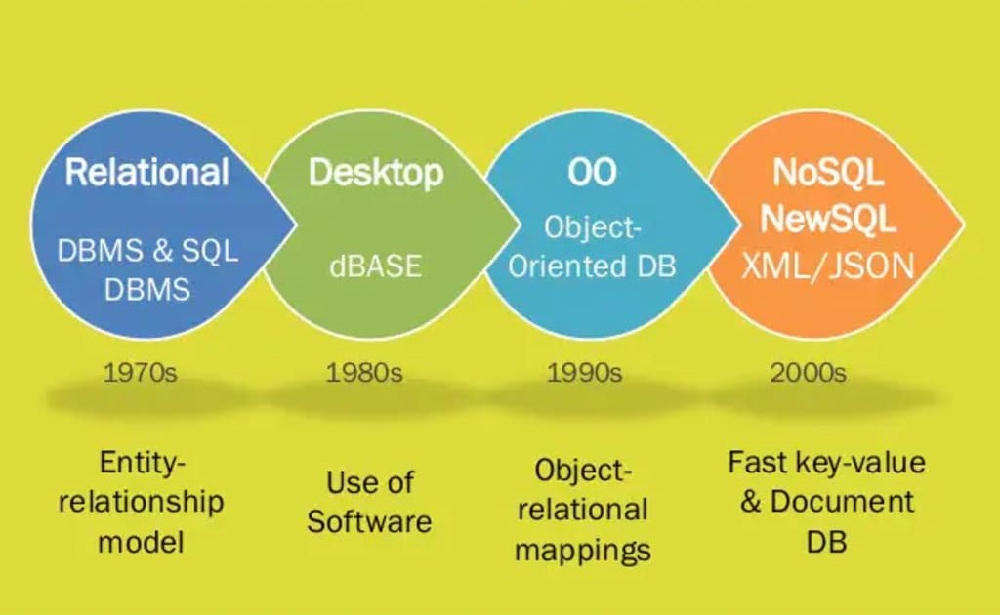

The firrst general-purpose DBMS was designed by Charles Bachman at General Electric in the early 1960s and was called the Integrated Data Store. It formed the basis for the network data model, which was standardized by the Conference on Data Systems Languages (CODASYL) and strongly influenced database systems through the 1960s. Bachman was the first recipient of ACM's Turing Award (the computer science equivalent of a Nobel prize) for work in the database area; he received the award in 1973.
In the late 1960s, IBM developed the Information Management System (IMS) DBMS, used even today in many major installations. IMS formed the basis for an alternative data representation framework called the hierarchical data model.
In 1970, Doctor Edgar Codd, at IBM's San Jose Research Laboratory, proposed a new data representation framework called the relational data model. This proved to be a watershed in the development of database systems: it sparked rapid development of several DBMSs based on the relational model, along with a rich body of theoretical results that placed the field on a firm foundation. Codd won the 1981 Turing Award for his seminal work.
In the 1980s, the relational model consolidated its position as the dominant DBMS paradigm, and database systems continued to gain widespread use. The SQL query language for relational databases, developed as part of IBM's System R project, is now the standard query language. SQL was standardized in the late 1980s, and the current standard, SQL-92, was adopted by the American National Standards Institute (ANSI) and International Standards Organization (ISO).
